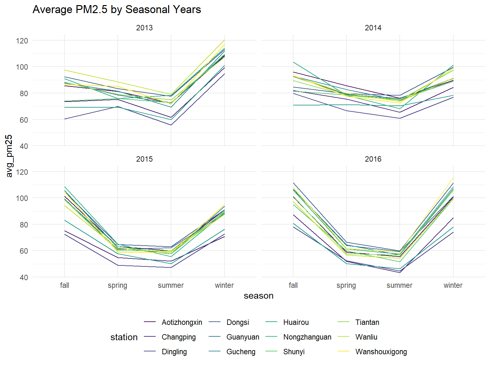

R Notebook
library(tidyverse)## -- Attaching packages ---------------## v ggplot2 3.2.1 v purrr 0.3.3
## v tibble 2.1.3 v dplyr 0.8.3
## v tidyr 1.0.0 v stringr 1.4.0
## v readr 1.3.1 v forcats 0.4.0## -- Conflicts ------------------------
## x dplyr::filter() masks stats::filter()
## x dplyr::lag() masks stats::lag()library(lubridate)##
## Attaching package: 'lubridate'## The following object is masked from 'package:base':
##
## datelibrary(modelr)
library(gridExtra)##
## Attaching package: 'gridExtra'## The following object is masked from 'package:dplyr':
##
## combinelibrary(leaflet)## This version of Shiny is designed to work with 'htmlwidgets' >= 1.5.
## Please upgrade via install.packages('htmlwidgets').library(wesanderson)
library(lubridate)
library(ggplot2)
library(dplyr)
library(data.table)##
## Attaching package: 'data.table'## The following objects are masked from 'package:lubridate':
##
## hour, isoweek, mday, minute, month, quarter, second, wday,
## week, yday, year## The following objects are masked from 'package:dplyr':
##
## between, first, last## The following object is masked from 'package:purrr':
##
## transposelibrary(ggrepel)
library(tidyverse)
library(haven)
knitr::opts_chunk$set(
echo = TRUE,
warning = FALSE,
fig.width = 8,
fig.height = 6,
out.width = "90%"
)
options(
ggplot2.continuous.colour = "viridis",
ggplot2.continuous.fill = "viridis"
)
scale_colour_discrete = scale_colour_viridis_d
scale_fill_discrete = scale_fill_viridis_d
theme_set(theme_minimal() + theme(legend.position = "bottom"))#setwd("./PRSA_Data_20130301-20170228")
files = list.files("./PRSA_Data_20130301-20170228", full.names = TRUE)
all<-map_df(files, read_csv) %>%
bind_rows() %>%
janitor::clean_names() %>%
select(-no) %>%
mutate(
wd = as.factor(wd),
station = as.factor(station),
date = as.Date(str_c(year, '-', month, '-', day)),
datetime = as.POSIXct(str_c(year, '-', month, '-', day, ' ', "00:", hour,":00")),
season = case_when(
(month < 3) ~ "winter", #start of Spring is 3/20
(month == 3 & day < 20) ~ "winter",
(month < 6) ~ "spring", #start of Summer is 6/21
(month == 6 & day < 21) ~ "spring",
(month < 9) ~ "summer", #start of Fall is 9/22
(month == 9 & day < 22) ~ "summer",
(month < 12) ~ "fall", #start of Winter is 12/21
(month == 12 & day < 21) ~ "fall",
(month == 12 & day >= 21) ~ "winter"
),
seasonal_year=if_else(month<4 & season=="winter" & year ==2014, 2013,
if_else(month < 4 & season=="winter" & year ==2015, 2014,
if_else(month < 4 & season=="winter" & year ==2016, 2015,
if_else(month < 4 & season=="winter" & year ==2017, 2016, year)))),
season_and= paste(season, " ", seasonal_year)
)Average PM 25 by year for all stations
all %>%
group_by(year) %>%
summarize(avg_pm25=mean(pm2_5, na.rm = TRUE)) %>%
ggplot(aes(x=year, y=avg_pm25)) +
geom_line()
Average PM 25 by year for each station
all_avg <- all %>%
group_by(year, station) %>%
summarize(avg_pm25=mean(pm2_5, na.rm = TRUE))
all_avg %>%
ggplot(aes(x=year, y=avg_pm25, color=station, group=station)) +
geom_line()
Average PM 25 by year and season for each station
all %>%
group_by(season, seasonal_year, station) %>%
summarize(avg_pm25=mean(pm2_5, na.rm = TRUE)) %>%
ggplot(aes(x=season, y=avg_pm25, color=station, group=station)) +
geom_line()+
facet_wrap(seasonal_year~.) +
ggtitle("Average PM2.5 by Seasonal Years")
Average PM 25 by year and season for each station
all %>%
mutate(season_and=factor(season_and, levels = c("spring 2013", "summer 2013", "fall 2013", "winter 2013",
"spring 2014", "summer 2014", "fall 2014", "winter 2014",
"spring 2015", "summer 2015", "fall 2015", "winter 2015",
"spring 2016", "summer 2016", "fall 2016", "winter 2016"))) %>%
group_by(season_and, station) %>%
summarize(avg_pm25=mean(pm2_5, na.rm = TRUE)) %>%
ggplot(aes(x=season_and, y=avg_pm25, color=station, group=station)) +
geom_line()+
ggtitle("Average PM2.5 by Seasonal Years") +
theme(axis.text.x = element_text(angle = 45, hjust = 1))
stats <- all %>%
select(station) %>%
group_by(station) %>%
summarise(
n = n()
)
a <- stats$station
latitude <- c(40.00, 40.228599, 40.288817, 39.931018, 39.927513, 39.912014, 40.316977, 39.945236, 40.131396,
39.877853, 39.976773, 39.880519)
longitude <- c(116.41, 116.216502, 116.239659, 116.424922, 116.357205, 116.189908, 116.631309, 116.474969, 116.658160, 116.423179, 116.292343, 116.368263)
maps <- tibble( station = a, latitude = latitude, longitude = longitude)
#map_type <- factor(mapss$type)
#new = c("red", "yellow")[map_type]
mapss <- all_avg %>%
left_join(maps, by = "station") %>%
mutate(
type = ifelse(avg_pm25 < 100, 1, 0),
color = ifelse(type == 1, "yellow", "red")
)
pal <- colorFactor(c("red", "yellow"),
domain = unique(mapss$type))
try <- mapss %>%
filter(
year == 2017
) %>%
leaflet() %>%
addTiles() %>%
addCircleMarkers(~longitude, ~latitude, label = paste0(mapss$station," Average pm2.5: ", mapss$avg_pm25), color = ~pal(type))
try#need to change wspm to CUMULATIVE wind speed for month or direction
all %>%
filter(station=="Dingling") %>%
ggplot(aes(x=dewp, y=wspm, color=pm2_5)) +
geom_point(alpha=0.10) +
scale_color_gradient(low="blue", high="red") #Compare years for dew point (boxplot), frequency of wind direction (stacked bar), and cumulative windspeed.
#Compare years for dew point (boxplot), frequency of wind direction (stacked bar), and cumulative windspeed.